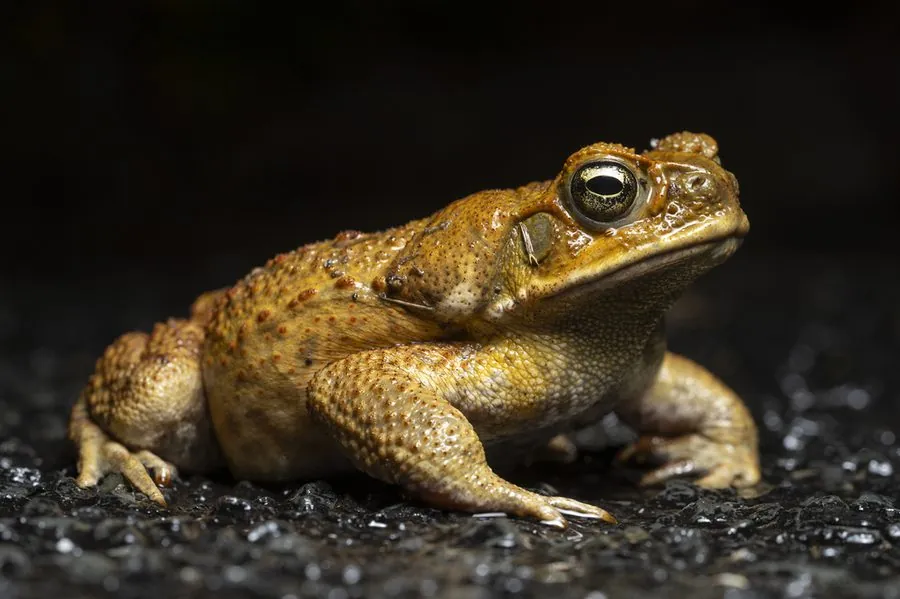

两栖动物 · 动物界
海蟾蜍 Rhinella marina

原产中南美洲的大型蟾蜍，耳后腺分泌强效蟾毒素，毒性可伤害宠物，被引入多国后成为危害本土动物的入侵物种。
- 分类
- 门脊索动物门纲两栖纲目无尾目科蟾蜍科属海蟾蜍属
- 栖息环境
- 草地、农田、灌丛、村落与河流、池塘附近
- 地理分布
- 原产中南美洲；被引入澳大利亚、加勒比等地，成为入侵物种
- 保护级别
- IUCN 无危（LC）；非中国原产；被列为全球百大入侵物种之一
物种志
海蟾蜍体长 10–15 厘米，个别可达 24 厘米，雌性大于雄性，是体型很大的蟾蜍。它皮肤厚实且布满疣粒，背面呈黄褐、灰褐或橄榄褐色，腹面淡黄，眼后有发达的耳后腺，能分泌乳白色的蟾毒素；四肢粗壮，趾间有蹼，善爬行也善游泳。
它原产于中南美洲，栖息于草地、农田、灌丛和村落附近，食性很杂，捕食昆虫、蜗牛、小鱼、小鸟、蛇类和小型哺乳动物，也会吃腐肉和宠物饲料。每年雨季繁殖，雌蟾一次产卵 8000–30000 枚，卵在 2–7 天内孵化，蝌蚪约 1–2 个月变态。它被引入澳大利亚等地用于防治甘蔗害虫，却因毒性强、繁殖快而成为严重的入侵物种，毒液可致宠物和本土动物中毒；在中国它属于外来物种，不可随意放生。
形态与习性
- 食性昆虫、蜗牛、小鱼、小鸟、蛇类和小型哺乳动物
- 体长10–15 cm，最大可达 24 cm
- 体重可达 1 kg 以上
- 寿命约 10–15 年
- 繁殖卵生，一次 8000–30000 枚，2–7 天孵化
- 活动节律夜行性，白天藏在阴湿处
- 毒性耳后腺分泌强效蟾毒素，接触或误食可致中毒
趣味知识
- 海蟾蜍被引入澳大利亚后迅速扩张，成为当地最严重的入侵物种之一。
- 它的耳后腺能喷出乳白色毒液，宠物误咬后可能中毒甚至死亡。
- 海蟾蜍一次可产下数万枚卵，繁殖速度极快，很难根除。